Drop #29 · March 12, 2025 · 35 min read
Hey everyone (▰˘◡˘▰)
Welcome back to DROPS, REINCANTAMENTO’s newsletter.
Drop #29 features Simone Robutti's provoking examination of contemporary political organization through what he terms "Political Holism." This analysis traverses the terrain between cybernetics, organizational design, and emancipatory praxis, articulating a witty critique of established leftist organizational paradigms. He traces a re-enchanted path where the struggle is fun, efficient, and powerful. But to achieve that, we have to challenge our most grounded assumptions.
Translator’s note: the article was originally published in Italian in Rizomatica Issue #7. The article was originally intended exclusively for an Italian audience, and taking the Italian political environment as the context. While most of what is said in the article is valid for most of the Western Left, some statements might map poorly to the political reality of other countries.
Simone Robutti is a knot of flows and occasionally he's a person too. He engages in Tech Unionism, Algorithmic Accountability, Common Cybernetics, and Democratic Organizational Design. He works as a consultant/trainer on Organization and Process Design. You can find his blog at this link.
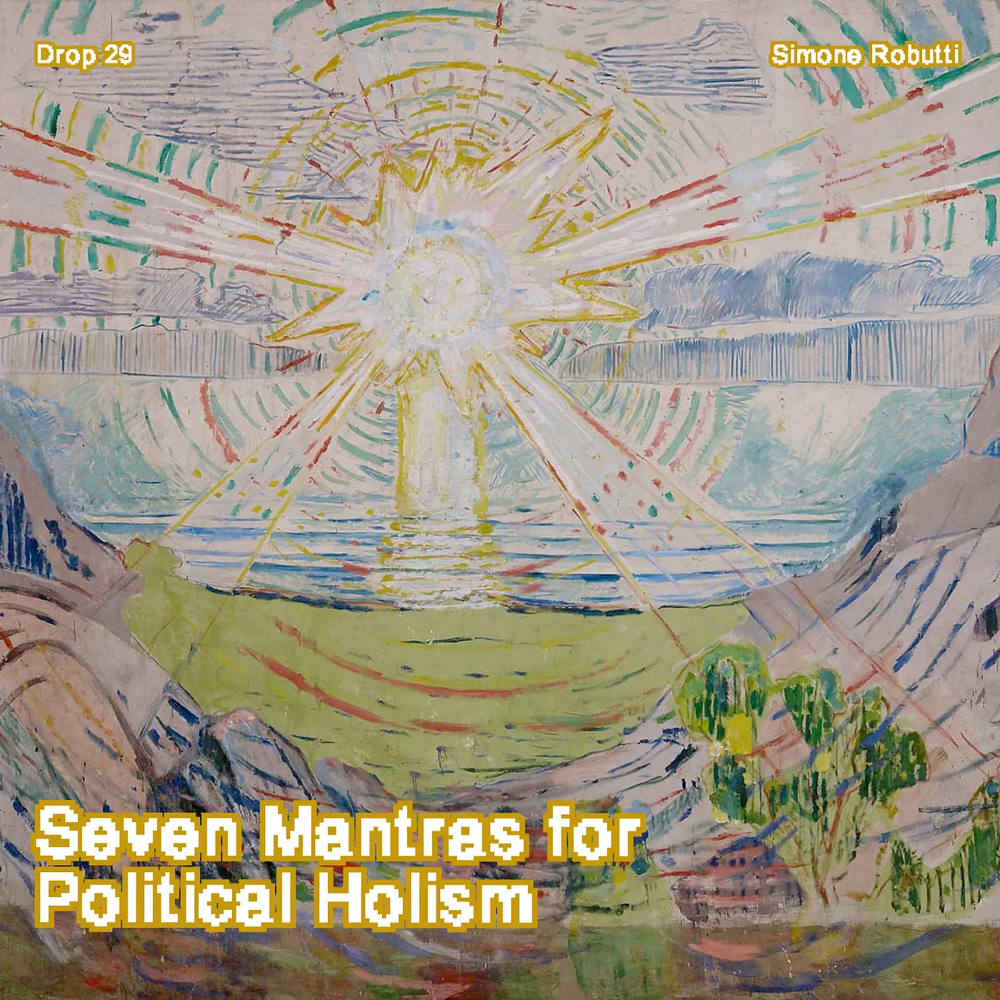
Introduction
Five years ago, I began my journey as an “organizer,” an umbrella term used in the Anglosphere for anyone involved in practical politics: professional trade unionists and volunteers, movement builders, curators of physical and digital political communities, facilitators, coordinators of collectives, study groups, parties, squats, paramilitary groups, secret societies. If the vagueness of the English term creates confusion, in Italian, with our well-established hatred for anything technical, we don't even have a term to group together those who have the expertise to make politics happen.
So, I was saying, my first experience as an "organizer": the Berlin chapter of Tech Workers Coalition had just been formed, and I was one of the co-founders, together with Yonatan Miller. I had no idea what I was doing nor did I have any particular experience in active participation in political or union organizations, let alone having a leadership position.
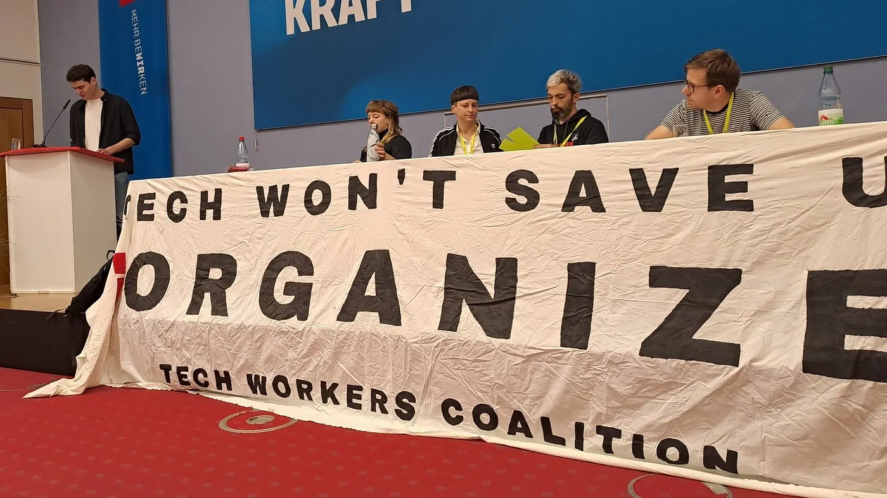
I was interested in leading a study group on techno-politics, and for this purpose I had accepted a position of responsibility in the chapter, despite having no specific interest in the unionization processes of tech workers. The situation would soon get out of hand.
Meanwhile, at work, in a start-up that developed compression algorithms for self-driving cars, the need to sabotage internal processes to make room for afternoon naps and playing video games had led me to assist the CTO in his project to introduce Holacracy in our company processes. Holacracy is an organizational methodology based on the better-known Sociocracy, but which allows the company's CEO to still keep workers on a leash.
The topic of organization, team building, change management, process design were quickly becoming relevant in my life as an ordinary programmer. I had never had particular interest in the subject, but the deeper I got, the more I understood its importance both for effective politics and to protect my naps from managers.
There was, however, a strong sense of dissatisfaction with a whole series of attitudes, traumas, resistances, postures, beliefs, prejudices, and rituals that characterized "grassroots" politics, "movement" politics, but also the structures of large unions and parties. There was a normalization of ineffectiveness, waste of energy, conflict, things done half-assed, that didn't sit well with me.
Control was understood always as oppressive control of others over us. It was never considered a tool for liberation, as a collective and democratic control of us over ourselves.
I was noticing, however, a new common sense emerging, both from American circles and from some more European experiences, such as eXtinction Rebellion or Last Generation. "Beginners talk about tactics, professionals study logistics," Omar Bradley would say, and from these organizations, while not being fully convinced of their strategies and tactics, I was observing the logistics, which in political organizations means processes, roles, structures, facilitation practices, knowledge organization, use of digital tools, public communication.
I perceived a sense of discontinuity with the past that I shared but couldn't quite give form to or name. I couldn't even tell if it was my feeling or something shared by other people. This was until at some point, Daniel Gutierrez, at the time in European Alternatives and now in the German service union Ver.di, invited me to a study group on Neither Vertical Nor Horizontal: A Theory of Political Organization, a book by a certain Rodrigo Nunes.
I didn't know much about Daniel, an American of Mexican origin, but I identified him as a very practical, incisive, and concrete person, despite his academic background. In his home country, he had unionized and won several strikes with workers at the university where he worked, and in Berlin, he was one of the frontmen of migrant unionization activities in European Alternatives, as well as one of the coordinators of Deutsche Wohnen & co Enteignen, the referendum campaign for the expropriation of Deutsche Wohnen apartments that would soon be won.
Reading Neither Vertical Nor Horizontal was mind-blowing, as were the discussions in the study group populated by a mix of "organizers": Americans and Berliners, trade unionists, movement builders, professional organizers, but also people from small neighborhood realities.
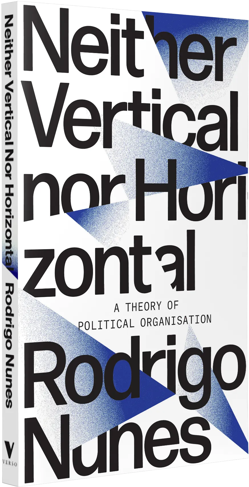
In the book, as well as in these people, I had finally found political sharing of my dissatisfaction. For a person who, like me, has been struggling for years to keep in check their egocentrism and tendency towards paternalism, it was extremely liberating to be told that if a system leads to political defeat, it must be changed. Those who defend strategies, practices, and rituals in an identitarian way even if they don't lead to concrete impact are part of the problem, regardless of the seniority of the traditions and identities they embody. Losing for decades, martyring oneself for nothing, having moral superiority should not be a source of authority on how politics should be conducted, because it does not generate competence on how to achieve political victories. And above all, I heard: there's nothing wrong with wanting to win, and to win you have to get your hands dirty.
Five years have passed, in which Nunes' work has opened the door for me to a profoundly different understanding of political processes, which today I have learned to call "Political Holism". An altered state of consciousness regarding politics made of rational agents, conflicts of ideas, magical voluntarism, representation, and testimony. A political psychedelia in which everything is connected but not everything can be known, and yet nothing can be ignored if you want to win.
In this article, I want to share with you some of the most important aspects of this transition, telling it from my subjective point of view, which is the only one that is reasonable to embody when doing politics. Subjects are inside history, and therefore politics can only be done with an internal, subjective perspective. The rest is modernist delirium.
The topic of organizations is both complicated and complex. Since intellectual protagonism has worn my patience thin, I won't try to give a linear and comprehensive treatment, an unrealistic goal for a single article and of an arrogance that I try to reject.
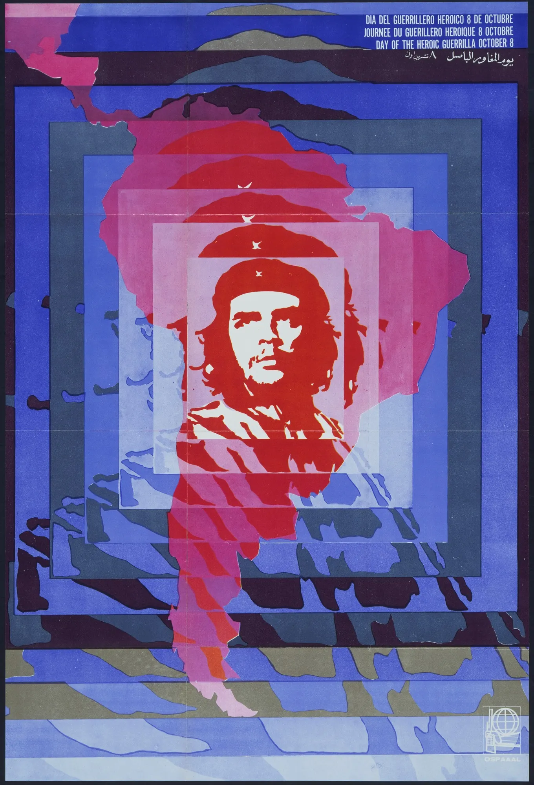
Instead, I will present you with a series of pedagogical slogans and mantras that have emerged over the years to condense pivotal ideas for emancipating oneself from the current common sense of what politics is, how it should be done, and how it should be organized. A way to nibble at the edges of a perspective shift that would otherwise be indigestible.
I will use these mantras as entry points to explain different and complementary aspects of Political Holism: some come directly from Nunes' book, others are reformulations of other authors, and some have simply emerged as sayings in the organizations I participate in or in writing the courses and workshops I teach.
One last note before we begin: the language of the article is deliberately low, concrete, even dirty but direct. The topic of organizations is already challenging and abstract enough without burdening it with an obscure vocabulary, references to dead philosophers, or wordy phrases to flex the writer's culture. If you don't write in a language understandable to the people you want to involve, you're elitist. If you don't know how to explain complex concepts in simple language, you might find a better activity than writing about political practice. If the ideas I present here are valid and useful, they will survive a violently simple presentation. If they are not, they will die on these pages, and for good reason.
Let’s begin.
I. Knowing things does not change things
Let's start with the most difficult mantra to digest: knowing things does not change things. This mantra emphasizes the need to always contextualize the use of knowledge and information to decide if they are useful or harmful to our political objective. This, in many leftist spaces, especially the more intellectual and academic ones, is done too rarely. Knowledge, awareness, dialogue, but also introspection, political education, and debate, instead of being intermediate steps toward a goal, become the goal themselves. We stop halfway through the work.
Instead of the change we want to produce, we put our opinions, our ideas, our feelings about a given topic, a given problem, or a given solution at the center, as if changing our ideas about it were enough to create change. We delegate to someone or something undefined the task of transforming this informational and emotional substrate into social and political change. Obviously, this often doesn't happen.
In extreme cases, like climate collapse, the deep disconnection between common opinion described by polls, the extreme gestures of some, the culture of our time, and the choices we are making as a society stands out. Why? Because there are concentrations of power where the interests of a few people (potestas) are placed in opposition to the desire for change, driven by insufficient political capital (potentia).
People and organizations with very refined understandings of the power structures we are immersed in can easily explain this phenomenon. In some circles, what I just said is obvious. However, from this understanding of structural power, they cannot draw any useful conclusions about how to change their own practices. Again, the responsibility to execute is delegated to someone else. You point the finger and then stop.
One of the premises of the liberal system is that political action, conflict, occurs primarily in debate, in the exchange of opinions between rational and informed agents, and from this realignment of opinions the impulse to act is generated. We've seen how well that's working. Spaces that reject this premise in words, or that reject its expression in the act of voting, nevertheless behave as if the circulation of information were a sufficient tool for change, mirroring in a different form the system they criticize.
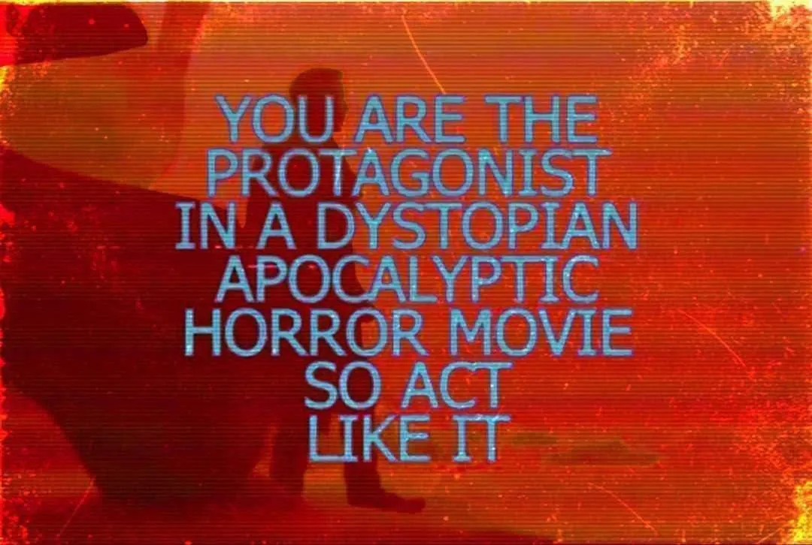
How do we cure this pathology? First, by giving back the dimension of a tool to opinions, debate, and confrontation. Change doesn't happen when the entire population agrees on something. When the Civil Rights Act was passed in the United States, 85% of Americans were against it. The others, however, had high mobilization power, proven by the Million Man March. The others also had armed militias scattered across the territory and with great support from the black population. Within it, debate and consensus building were absolutely important, given the diversity of views on what was appropriate to do, but it was aimed at concrete change.
Speaking of marches and street presence, one of the most striking aspects of the short-circuit described above is the idea that demonstrating in the street is a political result. Marching in the street, in itself, doesn't change any political balance. Marching in the street, at most, makes these balances visible, transparent, and when they are unfavorable, this visibility is more harmful than beneficial.
A strong union shows its muscles by bringing hundreds of thousands of workers to the street. A campaign, a movement, an organization counts and validates itself by meeting in the street. The problem is that often these counts are penalizing. It's a matter of perspective. Bringing 100 people interested in a specific issue to the street can be perceived as a great achievement on one side, but it demonstrates to those on the other side or who are neutral that interest in a given issue is extremely marginal. The balances have manifested, but perhaps it was better if they remained hidden.
Our mantra, "Knowing things doesn't change things," invites us to be critical of these beliefs, these rituals, born in a different world and now metabolized by the status quo. However, knowing things, while not sufficient, is necessary: study groups, mass communication, help desks, and especially practical training are means aimed at developing specific skills, liberating specific energies, and developing resources to spend in pursuit of one's goal. These activities, however, must always be subordinated to the goal itself and justified in terms of what you want to change.
As my friend Silvio Lorusso said:
Words don't change the world. Words, at most, change people who, if they want to and are in a position to do so, will change the world.
II. Force over Form
This mantra comes directly from Nunes, although it exists in other spaces in similar versions, like "function over form." In his book, Nunes tries to cure what he calls the "Double Trauma of the Left," namely the traumatic consequences of the transformation of the Soviet Union into a totalitarian state and subsequently the failure of '68 and the horizontalist approach.
Let's take a small detour into the traumatic interiority of leftist conscience.
In short, he argues that these two historical failures have over the years cultivated an identitarian culture of organizing, which creates splits and oppositions without real political content. In simple words: authoritarians and libertarians, verticalists and horizontalists, parties and movements, communists and anarchists are all oppositions that have gradually been emptied of political difference, to become forms of fandom based on identities. An imaginary dialogue between two opposite leftist teams sounds something like thi:
A: I'm better than you because I hold assemblies.B: No, I'm better than you because we have uniformed teams that go out to distribute flyers.A: No, you're a fascist because during meetings you keep track of speaking times.B: And you'll never accomplish anything because you discuss for hours whether to use the asterisk or the schwa.
The way politics is done becomes the political identity itself. Objectives take a back seat. The Nunesian therapy is as simple as it is profound: put the change you want to create at the center, figure out what strategy to adopt, and only then reason about what organizational form is best. The organizational form shifts from identity to tool.
Back to our second mantra, then.
Organizational form must be chosen according to objectives. It must be able to handle the informational, cognitive, and logistical complexity of the challenges it proposes to face. This must be done through a competent and intentional approach to organizations, through the disciplines that deal with them: organizational design, system design, process design, organizational psychology, systems theory, "movement building, and so on.
I won't elaborate on these aspects because we said I would write simply, so I'll just extend an invitation to you. Do you want to make your politics more effective? Read a book on sociocracy, on facilitation, take a course in process design or no-code development. The 700-page in-depth book on the situation in Nagorno-Karabakh can wait.
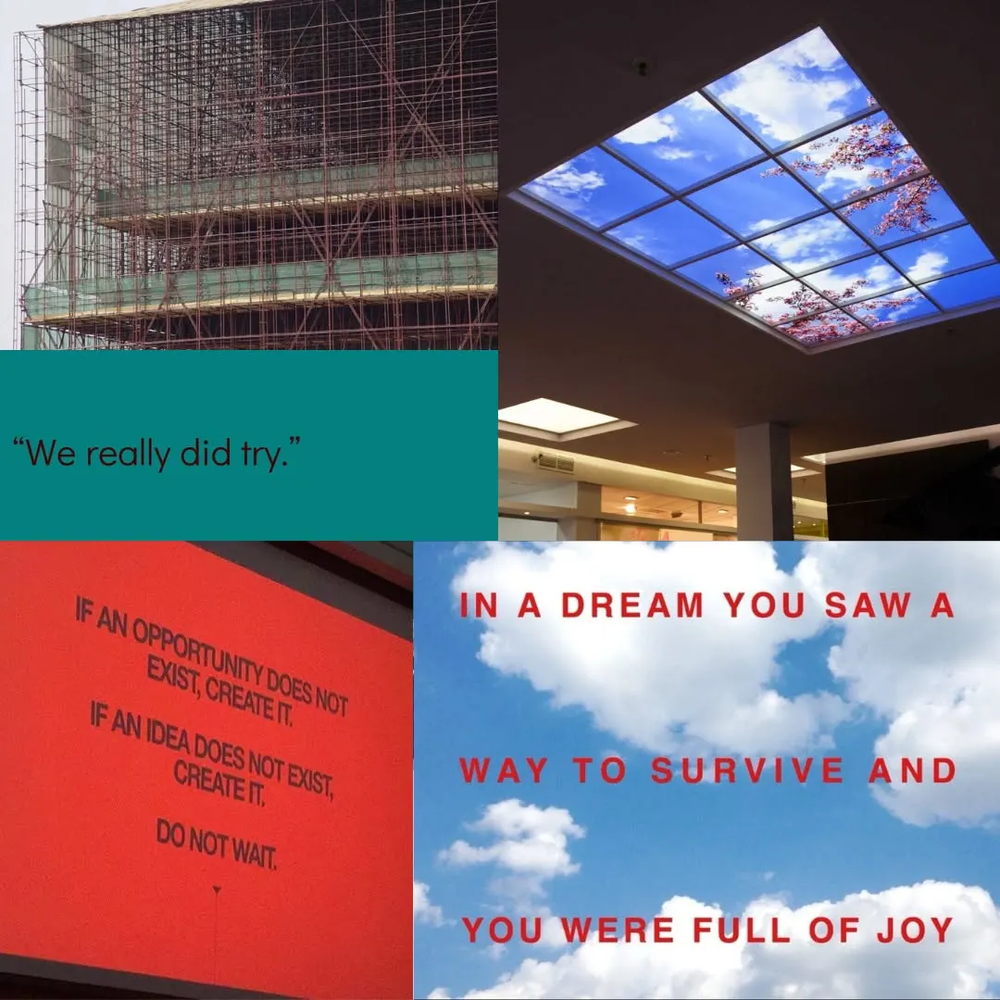
Since I study and practice these disciplines and actively bring them into political and union spaces, I can tell you that there is an extreme need for it, and as soon as you have an ounce of expertise, enough to help those around you effectively, you will be welcomed with open arms. The malaise created by inadequate organizational practices, whether bureaucratic and vertical or horizontal and slobbering, is real and felt, even by those who do not have the words to elaborate this feeling to themselves.
Moving to the next topic: spontaneism must be fought in every way possible. First in its most obvious form, that is, the idea that if there is a widespread complaint in society, sooner or later this will lead to action which in turn will lead to change. Second, in its more insidious form, that is, the idea that understanding a political phenomenon, a problem, or an issue, is enough to achieve a solution.
Building political organizations is a discipline in itself, which is independent of political competence: having competence on the housing crisis won't give you tools to win a referendum on the expropriation of real estate developers, like the DWE’s case mentioned in the introduction. The referendum in Berlin was won with an extremely systematic approach to recruiting volunteers to scale up signature gathering and promotion of the ideas behind the referendum: neighborhood units with clear interfaces to the central organization, promotional material developed specifically for different demographics, original and recognizable visual identity, clear and effective volunteer protocols and briefings, recruitment in different age groups, systematic door-to-door activity but also in unusual urban spaces- for example, they collected my signature at 10 p.m. on the lawn in front of the Volksbühne, a situation in which I had never seen anyone collecting signatures before.
This type of competence is also independent of values: organizations that want to create a world that would be horrible for us probably have a lot of excellent practices that we can copy, cleanse of ideological filth, and reuse. The way the SS operated, for example, was extremely decentralized and based on autonomous decision-making, much more like an organization of anarchists than an army. The Trumpian ecosystem, the “MAGA”, at the time of writing is similarly decentralized, with a galaxy of organizations, 110 of those that have signed Project 2025, plus hundreds of others on the side, each with completely different positions, values, and projects: from neo-monarchists to insurrectionists, from tech oligarchs to evangelicals, from groups that believe in reptilians to militias and paramilitary groups. Coordination occurs in the one common goal: to support Trump's candidacy and to bring about a project to broadly reorganize American society in a reactionary direction.
III. You can't checkmate on the first move
The third mantra always dwells on the same, inescapable point: you must put the goal and the change you want to create at the center of your political reasoning; the rest will follow. There is a problem though: setting a goal is easy, but figuring out how to achieve it is much harder.
In a holistic perspective, and specifically cybernetic, it's inevitable to conclude that one will never have sufficient information to develop a political strategy that leads to the desired result with absolute certainty.
To use a difficult word, Nunes talks about a "teleological approach," that is, the idea that social and historical developments follow precise dynamics that can be known scientifically and that by making certain choices, the consequences are determined and inevitable. By knowing such dynamics, one could therefore develop a planning of one's political action to then implement in the real world. If criticisms of a teleological view of history have been abundantly digested and we have collectively moved beyond, many political spaces still seem to operate with nineteenth-century suggestions. They look at history with an analytical eye, sitting in their armchair, which is usually actually a crooked plastic chair in the basement of a provincial political club. They consequently declare what for them is the line to follow. A line that inevitably leads to defeat.
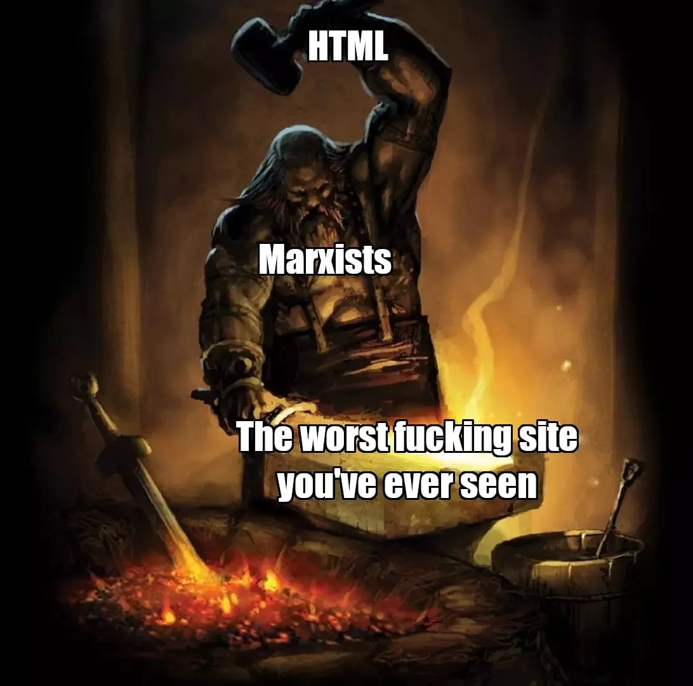
This happens primarily because we turn ideology into science: we mix the world we would like with the world we have and lose touch with reality. This is not to say that ideology itself is to be abandoned, because it is not possible, nor that it should be ignored in one's political practice. However, the ideologies we have today clearly no longer fit the world we have. The things I do, the modus operandi of those around me, and this same article, all contribute to constituting new ideologies, better suited to our goals, and giving tools to abandon old and unsuitable ones. We cannot know what shape the politics of 2050 will be, but I sincerely hope it will not resemble the politics of today.
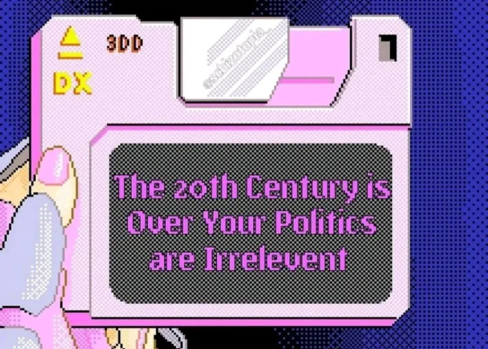
IV. You must play politics with the full deck of cards
If politics is a matter of setting goals and achieving them, if we have to develop an actionable strategy, if we have to confront our surroundings, then we must make clear decisions: how to act, what paths to follow, which tools, practices, tactics, messages, aesthetics, organizational forms, languages, rituals, identities. Nothing should be ruled out on principle, but only according to our assessment of how costly or risky it might be. Nothing is too “right-wing.” Nothing is “a thing for capitalists.” The end justifies the means. To be ineffective is a form of privilege. Being picky when choosing allies, being maximalists, and being purists is the luxury of those who engage in politics because of their beliefs rather than out of necessity.
This idea has been repeated endlessly in recent years, but the results are still disappointing. Saying it is easy, but making appeals and building rational arguments for unity or compromise is not the right way.
Often behind purism lie individual and collective psychological defense dynamics, of managing one's impotence. Faced with the enormity of the political challenges of the present, perhaps magnified by study, analysis, the development of consciousness, it is much easier to surrender than to fight. These mechanisms are often nothing more than a way to place oneself in a risk-free position, while denying to oneself and others one's surrender.
“The material conditions are not suitable”. “The centrists manipulated us”. “The union sucks because everyone in that company is right-wing”. These are all ways of justifying our defeat by trying to salvage a sense of dignity. It may make us feel better, but it immobilizes us. It keeps us whole, but powerless.
If the dynamic is psychological, if it's dictated by trauma, an appeal to unity sounds like inviting a depressed person to go for a walk in the woods. You can agree that taking a walk can be a good temporary distraction, but it is not by trekking that you will solve depression.
Therapy towards this defense mechanism must therefore pass through other routes. The freedom to act and see a result must be recovered. "Empowerment," Americans would say. Empowerment that must be first and foremost psychological, emotional, spiritual. If this cannot be done with great epochal victories, which clearly won't come soon, it must be done with less ambitious, more circumscribed objectives. Winning a strike after months of struggle, for those who participate in it, is probably similar to how you would feel the day after the revolution, in terms of euphoria, sense of accomplishment, and hope.
Another way to address these traumas is to mitigate the effects of their more aggressive expressions: spaces must be created where confrontation with those who have different ideas leads to positive results for both. IIt is not a matter of knowing, but of experiencing, and practicing. Set aside the ambition of dialogue, that is, the exchange between those with a shared worldview, in favor of less ambitious diplomacy, that is, exchange with those who do not share our perspective.
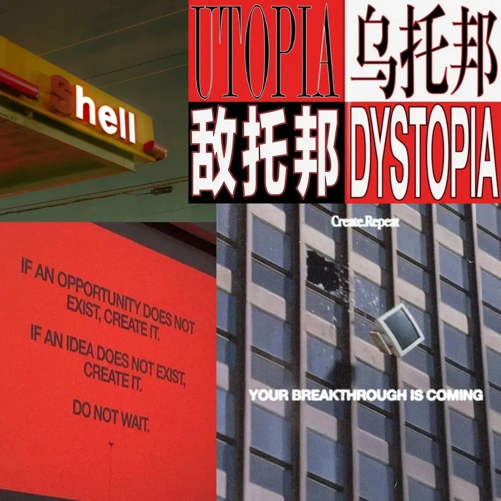
Politics as mediation between irreconcilable opposites, to the point of dissolving the opposition. The constant weaving of small and large forces to aggregate them.
This must be not only a principle but a practice. Daily practice, almost ascetic: every day say something you don't believe in, support someone you don't fully agree with, use a word you don't like, put yourself in the shoes of someone who hates you. Say: "yes and..." when you would like to say: "no, but...".
Only then can you expand your deck of cards and have a chance to win.
V. Patti Chiari, Amicizia Lunga
This popular Italian saying could be translated as “clear agreements, long friendship”. It encapsulates a fundamental principle for building any healthy and virtuous relationship: explicit agreements, transparent access to information, and disambiguation of communication lead to more stable structures and the building of trust. This is true in friendships, romantic relationships, and political organizations large and small. Trust requires clear communication. We hear this from our therapist, in courses on nonviolent communication, but we don't hear it enough when it comes to political organization.
Ambiguity harbors potential for conflict, because ambiguity leaves room for divergent interpretations.
Clarifying means turning the potential for large-scale future conflict into concrete small-scale conflicts in the present. It means anticipating future emotional reactions such as feelings of betrayal, disrespect, lack of trust, and fear of further conflict and giving them space in present discussions designed to clarify the meaning of agreements made, of what the other side is expected to do.
Those who take this issue seriously, both in the world of work and in politics, have created an infinity of tools and practices to combat and minimize ambiguity, which is constant and inevitable in human interaction. Techniques of facilitation and mediation, of knowledge structuring, of document writing, of process design.
However, it's not necessary to immediately launch into the most advanced practices to have concrete results. One can start from simple principles, and even these could require in certain cases a profound and tiring transformation.
I list a few that I think give great results:
Put in writing and track what requires specific behaviors: internal rules, assignment of tasks and functions, agreements between multiple organizations. If it's not written, it doesn't count. Verba volant, scripta manent, the Romans used to say. This also means preventing conflict if something has been said but not transcribed: the responsibility to produce clarity is shared by both parties, and the confusion generated by forgetfulness should be handled with patience and empathy toward the other party.
Standardize the most common processes through dedicated documents: if there is a series of practices and expectations in the way, for example, events are prepared in your organization and you want to include a new person giving them the responsibility to organize the next event, this person ideally should receive a guide in which all the steps they need to take are explicit, who they need to interface with, what are the guidelines to promote the event and so on. If the new person makes a mistake due to lack of specifications, the responsibility lies with the part of the organization that created the process document, not with the person who used it.
Clearly separate important and binding information from superfluous ones. The most common example is organizations that take very detailed minutes or record all meetings and assemblies. Relevant information put in a flow of notes of a dozen pages, or an agreement made verbally stuck in a 2-hour video are information that, in fact, are inaccessible. Requiring those who did not participate, or those who months later want to reconstruct the agreements made in a given meeting, to grind through pages of notes or hours of video is to be considered on par with an active attempt to conceal such information. In your digital or paper spaces, there must be a clear separation between what will be relevant in the long term and what is tracked for completeness. An excess of information does not generate knowledge, but limits it.
These problems are deadly for small and under-resourced organizations because they introduce enough friction to exhaust the energy available.. A flash in the pan that translates into nothing and concludes with a long retrospective statement that usually contains some variant of the phrase: "Politics is learning to lose better" or some other consolatory bullshit of the same caliber.
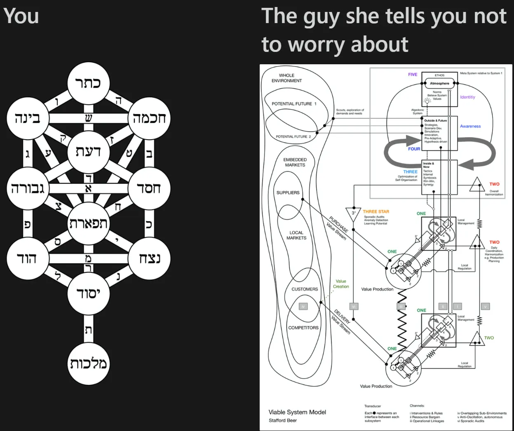
For larger, more established organizations with access to more resources, often born when everything was done with pen and paper, these frictions tend to absorb all the surplus energy. Parties or unions are the most glaring examples. These often embody the worst of disorganization: centralized strategic functions leading to rigidity on the ground, but then local sections are forced to reinvent the wheel for each process or activity. It is no coincidence that many people, as they begin their careers in a political setting, choose less and less to stay in these organizations and move to environments where there is more room for maneuver: civil society, think tanks, independent research groups, advocacy groups, movement schools, and so forth. No one wants to get caught up in dysfunctional organizations anymore.
Be careful, however, not to become Manichean in this sense: the fact that these structures are limited, difficult to reform, ineffective, does not mean that they are actively a problem to dismantle or that they become "the enemy." Otherwise, there is a risk of reproducing the trauma in a new form: bad parties, good assemblies. Bad unions, good collectives. This is not the point. The awareness of the limits of certain organizational forms must inform our strategies, but it must neither become a moral or principled issue, nor give us a justification to ignore them. Large structures and in general rooted organizations are part of the ecosystem with which we must interact and we must do so with an awareness of their limits. Recognizing their problematic dynamics, rigidities, problems, must teach us not to reproduce them in our organizations and to imagine new ways of doing.
Managing the transformation of these mastodons is a long and complex job, but there seems to be no interest in reforming the modus operandi. They will extinguish themselves as the dinosaurs became extinct. From the window I have on the internal processes of, for example, the new American unions, there is a huge gap compared to the Italian ones. Not because they are smarter or have more resources, but because organizational effectiveness is a value, is a discipline that a trade unionist is expected to know how to cultivate throughout their journey. Where in Italy there is attention, for example, to argumentative ability, to conquer the hearts of workers with the right speeches, in the USA there is attention to methodology, to numbers, to the reproducibility of practices, to automation, to scalability that allows systematically mobilizing hundreds of workers in a company to win thousands of votes and having perhaps no more than a handful of full-time trade unionists available. Before you even learn how to have a 1-to-1 conversation, you are taught the Bullseye method.
In the long run, it makes a difference.
VI. Politics with the subject inside
This is one of the least effective slogans because it is too abstract. Yet it emphasizes a key point of political holism: we, the subjects who engage in politics, can only be part of the system we want to change. There is no outside. We are part of the phenomena we want to analyze, study, alter, or disrupt. We are not external observers but internal observers. If you think there is an outside, show me. Where is it? Who, in a globalized world, is free from the flow of History? Who is untethered from social dynamics?
We are ships floating on water and pushed by the wind. We navigate by observing the sea: maps describe what is around us, but they are not the sea, they are not the land.
This perspective short-circuits a whole series of ideologies, practices, and postures that respond to a psychological need for autonomy, for defense from the social system in which one is immersed, but which conceal power structures, and political dynamics.
Here autonomy is understood in a specific way: not in its literal meaning of “making our own laws,” which can still be done. Autonomy here means emancipation from the logic of the social system around us. It implies renouncing the possibility of shielding ourselves, even temporarily, from our environment that conditions our past, determines the possibilities of action in the present, and influences the outcomes our actions may have in the future.
There is no counter-culture: there is a single cultural system, densely connected or less depending on the historical period, in which some agents have many resources and are hegemonic while other actors have fewer resources and must content themselves with niches.
There are no temporarily autonomous zones (T.A.Z.): there are zones where you can do whatever you want until the police arrive or until it's Monday and you have to go back to the office. Any political project imagined or practiced within these zones, such as festivals, raves, or more directly political contexts must sooner or later clash with the ecosystem of powers in which it is immersed.
These experiences are useful to liberate, in part, people's imagination, but only that. Like a seedling sown in a planter in February because it is too cold in the field, which eventually has to be moved to the field to grow: if the soil is not suitable, or the temperatures are too cold, the seedling will die anyway. The planter is a necessary support, but it is not sufficient. The seedling, sooner or later, has to be planted out. Similarly, inspiring others only works if they can imitate you: the inspiration given by so-called “prefigurative politics” does not change the position of the pawns on the chessboard, but can at best suggest your next move.
There is also no longer the idea, increasingly fashionable in recent times, of escape from society: even the most isolated and independent commune must deal with the industrial production system and sees its chances of survival threatened by phenomena such as climate change, the collapse of the biosphere, or microplastics whose effect covers the entire surface of the globe.
Cottagecore is a fascist fantasy.
At a more conceptual level: having to go live in a farmhouse in the middle of the hills and spend evenings discussing whether the purchase of toilet paper involves a dependence on the capitalist system is a situation no one would voluntarily get into if it weren't for dynamics intrinsic to the same capitalist system one wants to escape from. In the movies Matrix 2 and Matrix 3, the rebel city of Zion is always part of the simulation built by machines to trap humans. That's not the way out.
Another, less obvious “outside” is the one conceived by those, revolutionary or reformist, who believe that taking control of the state is a destination and not a point of departure. The day after the Revolution, the world is pretty much the same as the day before. We must abandon the idea that there can be a clean rupture, by electoral or military means, a tabula rasa of society and a new beginning, a liberation from the shackles of the present, and a neat and perfect “outside” to be built from the ground up.
Finally, there are no organizations or research groups that can call themselves external to social phenomena. Posture adopted by those who call their political analysis "science" and aspire to some degree of objectivity. The choice is not between being inside or outside, but between being aware of being inside or convincing oneself of not being. Obviously, for the effectiveness of political practice, one of the two options leads to better results. We leave it to the student to decide which of the two is preferable.
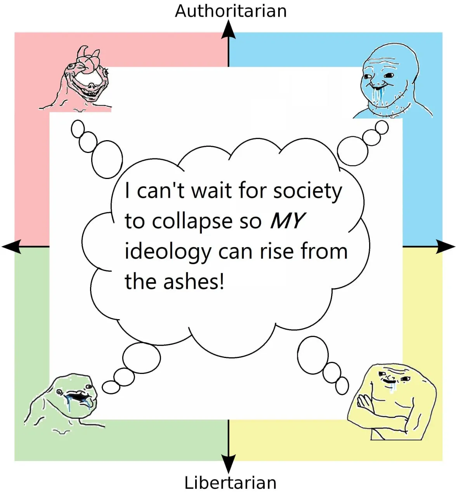
VII. Our enemy is Netflix
The last mantra reminds us that the people we want to politically activate are human beings. Not ethereal rational agents to be convinced with refined political constructions, but animals made of bones, blood and flesh, hormones, bacteria, and nerves. Beings who want to be well.
Netflix's model of audiovisual content consumption is successful because it responds to very specific needs: need for distraction, little energy to choose what to watch or even worse to actively search for quality films or series, nearly unlimited amount of material. This leads to overconsumption which, among various consequences, drains personal time and transforms it into data and profit for the platform. You turn on Netflix when you get home and it stops when you've fallen asleep with the computer on your chest.
I generally don't watch movies or series, but I have a similar relationship with video games. A relationship that took me years to set healthy boundaries and recover personal time by filling it with meaningful activities. I consider myself privileged to have succeeded.
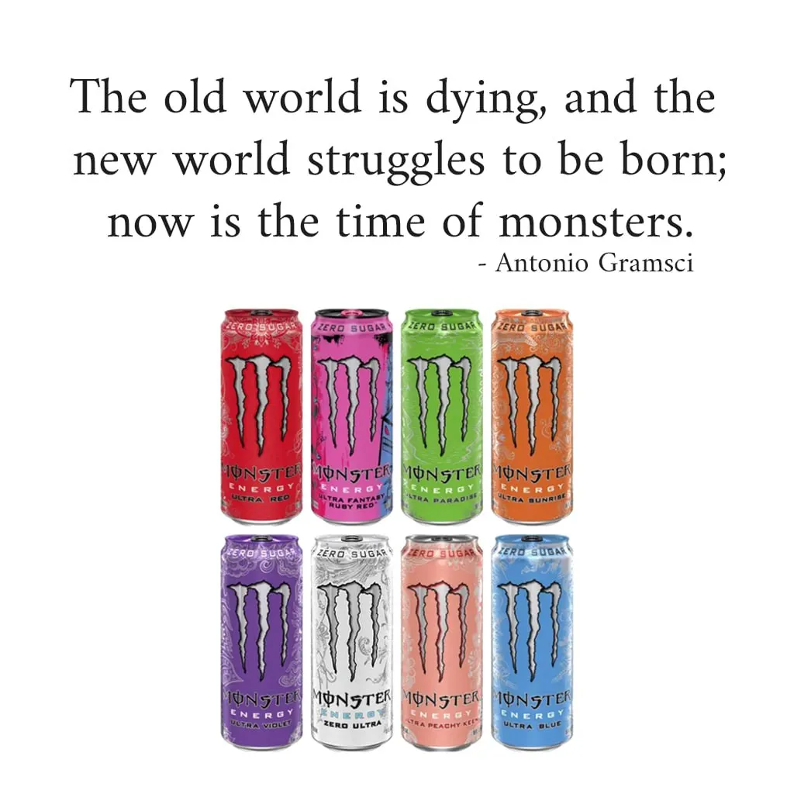
Others have this problem with more traditional forms of entertainment like TV, or with more recent ones like TikTok. The effect is the same.
A good part of widespread political practices is incompatible and defenseless in the face of the transformation of personal time that has occurred in recent decades, in the face of the attention economy, in the face of political disengagement due not to the lack of values or convictions, but disengagement due to the lack of energy.
Too many political spaces use old practices, evolved in a context where attention was abundant and personal time was not prey to voracious multinationals but threatened at most by the fatigue of the working day, end up including and motivating only those who already have a reasonably free personal time. This time is perhaps already occupied by political activity, by participation in communities or other social forms that fill personal time, either because for individual vicissitudes there are barriers or intentional discipline towards the management of one's time. This is now a privilege of an increasingly small fraction of the population, especially those under 50 years of age.
Getting back to our mantra: the enemy is Netflix because political engagement and movie streaming compete for the same resources, and to date, Netflix is winning big.
How then do you compete? Well, participation in your initiatives has to be more fun, interesting, relaxing, engaging, exciting, satisfying, and compelling than Netflix. If you only leverage a sense of duty, if you make participation a matter of sacrifice, you will have an organization of martyrs who grind and laugh. This may be fine if you want to start a suicide bombing squad, but less so if you are doing a referendum campaign and want to involve tens of thousands of volunteers.
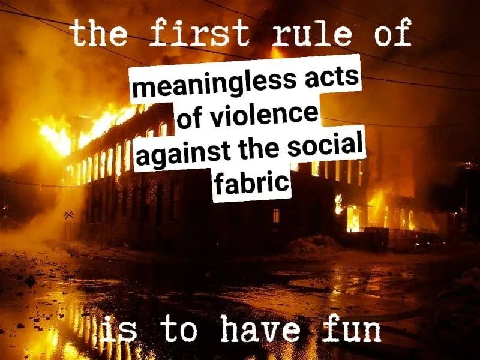
You have to create a path through which people come out regenerated and not burned out if you want an organization that can grow, mobilize, and organize a large number of people, aggregate in a systematic way. Otherwise, it is not sustainable.
This should not reduce political praxis to entertainment or the creation of mutual support spaces. These are useful elements in a political ecosystem, but alone they do not create change.
Moreover, the key point isn't what you do, but how you do it. A meeting, a study group, cleaning a physical space can all be occasions, if not regenerative, at least pleasant enough to want to repeat them without appealing to one's self-discipline.
There are many small things that can be done to start. First of all, bring food. The idea of gathering human beings without eating together is a madness that must end. We've forgotten the basics. Tech oligarchs have built a cultural hegemony on free fruit and pizzas in the office and at meetups. We're monkeys who've lost their hair: whoever feeds us automatically becomes a friend.
Eating then means eating well: it doesn't have to be a starred restaurant lunch with expensive ingredients, but overcooked pasta with tomatoes and beans that doesn't taste like anything does more harm than good.
Another important element is the emotional management of groups and spaces: for fear of overpowering, often and willingly space is left for the worst toxicity, which filters out the most conflictual people. These remain and those more sensitive or simply with healthier standards run away. Look at the faces of the people who participate in your events, look at them in the face during meetings. If they seem uncomfortable, afraid, fearful, nervous, have the emotional audacity to investigate the reasons and understand what needs to change.
Going back to the topic of attention, reduce the informational complexity of the activities you require of your members. Sessions of more than 60 minutes without breaks are unsustainable. Reading long and poorly written documents, reviewing disorganized minutes, unclear or absent processes are all examples of wasting cognitive resources. Each person is responsible for minimizing the load they place on others' brains.
Clarity is an act of care.
Bottom line: learn to respect time and attention, both others' and your own. Start activities on time and finish them on time. Put yourself in others' shoes to understand what you are demanding when you ask a question, make a proposal, or plan a meeting.
I wanted to tell you in a very disorderly, perhaps verbose,but sincere and unfiltered way what goes around in my head every day, but also what I believe has brought positive results in the organizations I’m in.
I am incredibly lazy. What bothers me most in the world is making an effort. The second thing that bothers me most of all is seeing others make an effort: I empathize and I get tired too. The only effort I tolerate is that which allows me to make less effort tomorrow, or that frees me from seeing others struggle. There's a reason I became a computer scientist.
This spirit has fueled the writing of this article, hoping to free you from wasting energy, stress, and the malaise of politics. I do this not because I particularly love you, but because I find it incredibly annoying to witness people running in circles to achieve nothing.
Do better to do less.